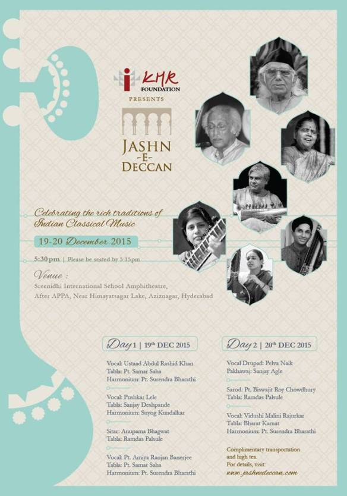
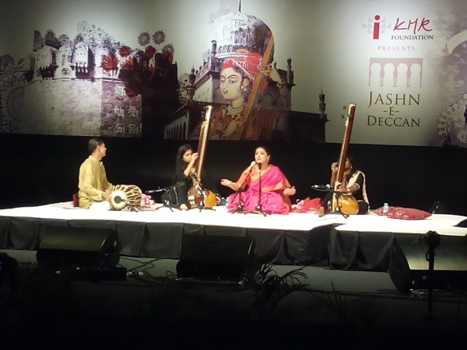
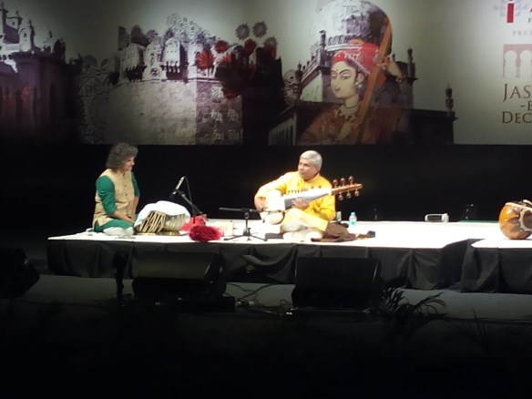
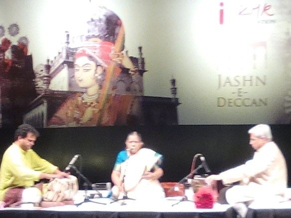

हैदराबाद की संस्था KMR Foundation ने कल हैदराबाद की शाम सुरीली बना दी।
संस्था ने “जश्न-ए-दक्खन के नाम से शास्त्रीय संगीत का दो दिवसीय कार्यक्रम दिनांक 19 और 20 दिसंबर को Srinidhi International School के ऑडिटोरियम में आयोजित किया था।

जश्न- ए- दक्खन[/caption]पहले दिन यानि शनिवार का कार्यक्रम नहीं सुन-देख पाए उसका दुःख रहेगा क्योंकि उसमे 107 वर्षीय उस्ताद रशीद खां साहब, पंडित अमिय रंजन बनर्जी और पंडित पुष्कर लेले की गायकी के अलावा विदुषी अनुपमा भगत का सितार वादन था।
परन्तु दूसरा दिन यानि कल रविवार को मौक़ा लपक लेने में कोई चूक नहीं की।
सबसे पहले युवा गायिका विदुषी पेल्वा नायक ने राग मारवा में धमार से शुरुआत करने के बाद होली खेलत नंदलाल और अंत में राग दुर्गा- झपताल में ख़्वाजा मोरी.. बंदिश सुनाकर समां बांध दिया।

उनके बाद आए पं. बिश्वजीत रॉय चौधरी जिन्होंने सरोद पर राग छायानट सुनाया और आपके साथ तबले पर संगत पं रामदास पलसुले ने इस जुगलबंदी को श्रोता बिरादरी ने बहुत पसंद किया और खूब तालियां बटोरी।

अंत में आईं विदुषी मालिनी राजुरकर जी, जिन्होंने शुरुआत की बागेश्वरी अंग के चंद्रकौंस की बंदिश “नाहीं, तुम बिन न कोई जग में उपकारी” सुनाई और उसके बाद दूसरी बंदिश “नैनन नींद न आणी, सखी” सुनाई।

विदुषी मालिनी राजुरकर
उसके बाद खमाज राग में टप्पा “चाल पहचानी” सुनाया। अन्त में राग भैरवी में निबद्ध पंडित बलवंत राव भट्ट की बंदिश “साध लेना षड्ज अपना- स्वर तुम्हारे हैं सभी सुनाई जिसे सुनकर श्रोता झूमने लगे।
अभी मन भी नहीं भरा था कि समय की कमी के कारण कार्यक्रम समाप्त करना पड़ा।
एक ख़ास बात दिखी वह थी इतने बड़े कलाकारों की विनम्रता! पं. पुष्कर लेले और विदुषी पेल्वा नाईक भी मालिनी जी का गायन आम श्रोताओं के बीच बैठ कर सुन रहे थे।
आयोजकों ने इस कार्यक्रम में आने के लिए कोई शुल्क तो नहीं रखा बल्कि श्रोताओं के आने जाने के लिए मुफ़्त में बसों के और अल्पाहार का भी इंतजाम किया था।
बहुत बहुत धन्यवाद KMK Foundation आपने इतने बड़े कलाकारों को हमें सुनने का मौक़ा दिया।